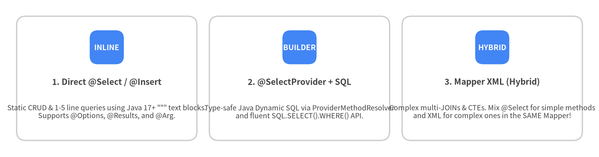
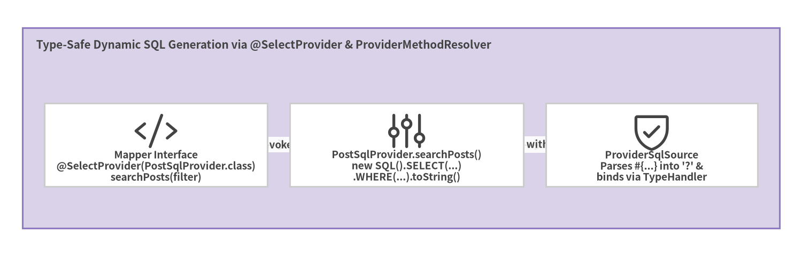

6. Java Annotations & SQL Builder
With Java 17+ multi-line text blocks (""" ... """), MyBatis's 39 annotations in org.apache.ibatis.annotations and fluent org.apache.ibatis.jdbc.SQL builder allow you to author clean, self-contained Mapper interfaces without external XML files.
XML vs Annotations vs *Provider: Choosing the Right Tool

Source Code
from drawlib.canvas import save, setup
from drawlib.smartarts import CardList
from drawlib.styles import Colors, Styles
setup(width=144, height=38, dpi=150)
cards = CardList(
style=Styles.Neutral.patch(shape_fill_color=Colors.White),
text_style=Styles.DarkBold.patch(text_size=10.0),
description_style=Styles.Dark.patch(text_size=8.6),
badge_shape="rounded_rect",
badge_style=Styles.PrimaryFlat,
badge_text_style=Styles.WhiteBold.patch(text_size=9.0),
direction="horizontal",
spacing=3.0,
)
cards.add(
"1. Direct @Select / @Insert",
'Static CRUD & 1-5 line queries using Java 17+ """ text blocks.\nSupports @Options, @Results, and @Arg.',
badge_text="INLINE",
)
cards.add(
"2. @SelectProvider + SQL",
"Type-safe Java Dynamic SQL via ProviderMethodResolver\nand fluent SQL.SELECT().WHERE() API.",
badge_text="BUILDER",
)
cards.add(
"3. Mapper XML (Hybrid)",
"Complex multi-JOINs & CTEs. Mix @Select for simple methods\nand XML for complex ones in the SAME Mapper!",
badge_text="HYBRID",
)
cards.draw((4.0, 4.0), width=136.0, height=30.0, align="bottom_left")
save()
[!TIP] Hybrid Mappers Work Out of the Box: You do not have to choose exclusively between Annotations and XML across a project—or even within a single Mapper interface! Keep 80% of simple CRUD methods directly on
AuthorMapper.javawith@Select/@Insert, and place the 20% of complex analytical queries inAuthorMapper.xml.
Core CRUD & Result Mapping Annotations
package com.example.blog.mapper;
import java.util.List;
import java.util.Optional;
import org.apache.ibatis.annotations.Arg;
import org.apache.ibatis.annotations.Delete;
import org.apache.ibatis.annotations.Insert;
import org.apache.ibatis.annotations.Options;
import org.apache.ibatis.annotations.Param;
import org.apache.ibatis.annotations.Result;
import org.apache.ibatis.annotations.ResultMap;
import org.apache.ibatis.annotations.Results;
import org.apache.ibatis.annotations.Select;
import org.apache.ibatis.annotations.Update;
public interface AuthorMapper {
@Results(id = "authorResultMap", value = {
@Result(property = "id", column = "id", id = true),
@Result(property = "username", column = "username"),
@Result(property = "email", column = "email"),
@Result(property = "createdAt", column = "created_at")
})
@Select("""
SELECT id, username, email, created_at
FROM authors
WHERE id = #{id}
""")
Optional<Author> findById(@Param("id") long id);
// Reuse the named @Results mapping above via @ResultMap!
@ResultMap("authorResultMap")
@Select("""
SELECT id, username, email, created_at
FROM authors
WHERE email = #{email}
""")
Optional<Author> findByEmail(@Param("email") String email);
@Insert("""
INSERT INTO authors (username, email, created_at)
VALUES (#{username}, #{email}, #{createdAt})
""")
@Options(useGeneratedKeys = true, keyProperty = "id", keyColumn = "id")
int insert(Author author);
@Update("""
UPDATE authors
SET username = #{username}, email = #{email}
WHERE id = #{id}
""")
int update(Author author);
@Delete("DELETE FROM authors WHERE id = #{id}")
int deleteById(@Param("id") long id);
}
Constructor Mapping with @Arg
In MyBatis 3.5.4+, you can declare @Arg directly on a method without wrapping it in @ConstructorArgs:
@Arg(id = true, column = "id", javaType = Long.class, name = "id")
@Arg(column = "username", javaType = String.class, name = "username")
@Arg(column = "email", javaType = String.class, name = "email")
@Select("SELECT id, username, email FROM authors WHERE id = #{id}")
AuthorRecord findRecordById(@Param("id") long id);
Programmatic Dynamic SQL with @SelectProvider and SQL Builder
Instead of embedding <script> XML strings inside annotations, pair @SelectProvider (or @InsertProvider, @UpdateProvider, @DeleteProvider) with ProviderMethodResolver and org.apache.ibatis.jdbc.SQL.
When your provider class implements ProviderMethodResolver, MyBatis automatically matches the provider method with the same name as the Mapper method:

Source Code
from drawlib.canvas import save, setup
from drawlib.diagrams.architecture import ArchitectureDiagram, Node, NodeGroup, PhosphorIcon
from drawlib.styles import Colors, Styles
setup(width=144, height=46, dpi=150)
d = ArchitectureDiagram(
node_style=Styles.Dark,
node_text_style=Styles.DarkBold.patch(text_size=9.2),
edge_style=Styles.Dark.patch(line_width=1.5),
edge_text_style=Styles.DarkBold.patch(text_size=8.8),
node_card_style=Styles.Neutral.patch(shape_fill_color=Colors.White),
)
grp = d.add(
NodeGroup(
"Type-Safe Dynamic SQL Generation via @SelectProvider & ProviderMethodResolver",
width=136,
height=36,
style=Styles.SecondaryNeutral,
text_style=Styles.DarkBold.patch(text_size=10.0, halign="left", valign="top"),
),
xy=(4, 5),
)
n_m = grp.add(Node("Mapper Interface\n@SelectProvider(PostSqlProvider.class)\nsearchPosts(filter)", icon=PhosphorIcon.CODE, width=40, height=15), xy=(24, 15))
n_b = grp.add(Node("PostSqlProvider.searchPosts()\nnew SQL().SELECT(...)\n.WHERE(...).toString()", icon=PhosphorIcon.SLIDERS, width=42, height=15), xy=(69, 15))
n_s = grp.add(Node("ProviderSqlSource\nParses #{...} into '?' &\nbinds via TypeHandler", icon=PhosphorIcon.SHIELD_CHECK, width=38, height=15), xy=(113, 15))
n_m.connect(n_b, label="invokes")
n_b.connect(n_s, label="SQL with #{}")
d.draw(xy=(0, 0))
save()
package com.example.blog.mapper;
import java.util.List;
import org.apache.ibatis.annotations.Param;
import org.apache.ibatis.annotations.SelectProvider;
import org.apache.ibatis.builder.annotation.ProviderMethodResolver;
import org.apache.ibatis.jdbc.SQL;
public interface PostMapper {
@SelectProvider(type = PostSqlProvider.class)
List<Post> searchPosts(
@Param("authorId") Long authorId,
@Param("status") String status,
@Param("keyword") String keyword);
class PostSqlProvider implements ProviderMethodResolver {
public static String searchPosts(
@Param("authorId") Long authorId,
@Param("status") String status,
@Param("keyword") String keyword) {
return new SQL() {{
SELECT("p.id, p.author_id, p.title, p.status, p.published_at");
FROM("posts p");
INNER_JOIN("authors a ON a.id = p.author_id");
if (authorId != null) {
WHERE("p.author_id = #{authorId}");
}
if (status != null && !status.isBlank()) {
WHERE("p.status = #{status}");
}
if (keyword != null && !keyword.isBlank()) {
WHERE("p.title ILIKE '%' || #{keyword} || '%'");
}
ORDER_BY("p.published_at DESC");
LIMIT(50);
}}.toString();
}
}
}
Notice that new SQL() automatically joins multiple WHERE(...) calls with AND, and because the provider string still uses #{authorId}, #{status}, and #{keyword}, ProviderSqlSource compiles every parameter into a safe ? PreparedStatement placeholder!